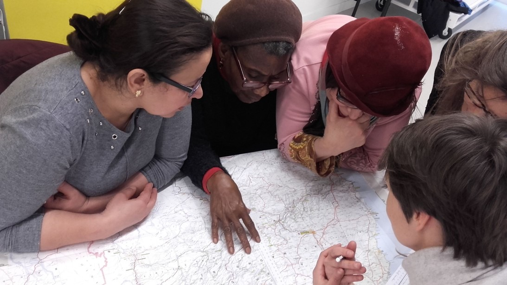
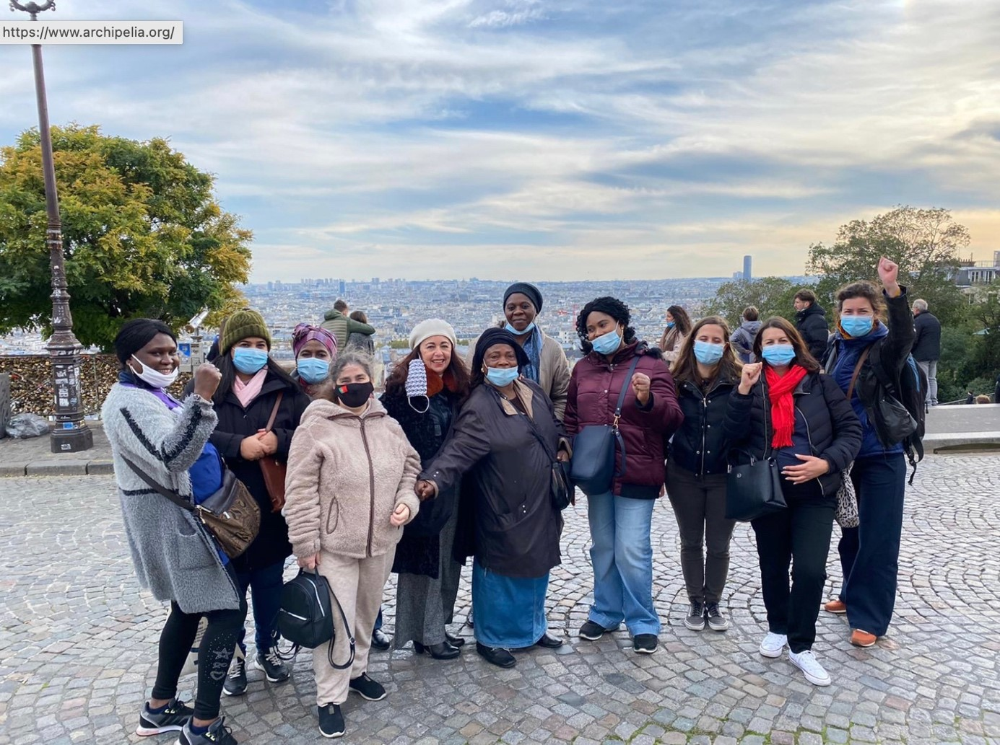

À Belleville, un quartier populaire du 20e arrondissement de Paris qui s’embourgeoise depuis plusieurs décennies, des femmes se rassemblent tous les lundis après-midi à Archipélia, un centre social situé au 17 rue des Envierges, au-dessus du parc de Belleville. Récemment arrivées de l’étranger ou installées depuis les années 1980, mères, femmes de tous âges vivant dans des situations de précarité ou dans une plus grande stabilité, elles participent chaque semaine aux Lundis Femmes solidaires, un collectif qui a été créé en 2008 par Quartiers du monde, une ONG de solidarité internationale et le centre social Archipélia. C’est un espace non-mixte d’expression, de réflexion, de partage d’expériences et d’actions collectives, qui œuvre au renforcement des capacités des femmes des quartiers populaires. Inséré dans un réseau international grâce à Quartiers du monde, il s’appuie sur des échanges d’expériences et de méthodologies avec des structures du Sénégal, Maroc, Colombie et Bolivie. Les ateliers se déroulent tous les lundis de 14h à 17h et accueillent de nouvelles femmes tout au long de l’année, qui peuvent venir sans inscription préalable.
De 2018 à 2021, trois géographes (Amandine Chapuis, Anne Clerval et Mari Oiry-Varacca) ont pris part à cette dynamique collective et ont contribué à animer des ateliers autour de l’orientation dans l’espace, à partir de cartes utilisées au centre social, ou de balades dans et en dehors du quartier.
Ainsi, lors d’un « rallye sur table », des groupes de femmes ont fait un voyage virtuel depuis les montagnes marocaines jusqu’à Belleville à travers des cartes posées sur les tables : des cartes du Maroc, de l’Espagne puis de France, une carte de l’Île-de-France, une carte de Paris et, enfin, une carte du quartier. En suivant les indices et en se repérant sur les cartes à des échelles différentes, elles sont enfin arrivées à Archipelia ! Ce fut un premier travail commun sur l’orientation, pour aller à l’encontre de l’idée reçue selon laquelle les femmes ne sauraient pas se repérer dans l’espace. Échanger sur nos façons d’utiliser les cartes, s’apprendre les unes les autres à les lire : autant de manières de dédramatiser les cartes, de se familiariser avec elles et de s’en servir pour gagner en autonomie dans l’espace public.

En 2020, trois ateliers ont donné lieu à des productions de nature diverses (dessins, photographies, enregistrements sonores...), présentées sur cette carte.
Cette carte est le fruit de ce travail commun. Elle donne à voir le regard que posent les femmes sur l’espace qu’elles pratiquent au quotidien et donne à entendre ce qu’elles ont à dire sur leur vie dans ce quartier. Ces regards souvent invisibilisés par les médias, ces voix féminines passées sous silence sont pourtant si précieuses pour comprendre les évolutions des quartiers populaires. Avec cette carte, elles prennent la parole.
Leurs productions matérialisent les positions qu’elles occupent dans la ville, liées à la place qu’elles peuvent tenir dans la société en tant que femme et aux multiples variations de leurs trajectoires et de leurs divers positionnements sociaux.
